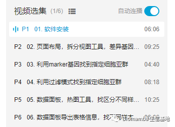

给你安排一个懂生信的工具人（十）：不学编程 零代码完成单细胞测序数据分析： Loupe Browser
原文：https://mp.weixin.qq.com/s?__biz=MzAwMzIzOTk5OQ==&mid=2247485730&idx=1&sn=42b9b35026bec5359ac34750dea3bf44&chksm=9b3f7072ac48f964970f673a86e27ecd453a80b953168dc110e0ea6bfa4110eeed3350c9601a#rd 合集：单细胞教程全收录

往期回顾

给你安排一个懂生信的工具人（一）：火山图 给你安排一个懂生信的工具人（二）：真-工具人给你安排一个懂生信的工具人（三）：凌波微课开发的在线版metacoder给你安排一个懂生信的工具人（四）：ggplot2"作弊器" 给你安排一个懂生信的工具人（五）：手把手教你用在线 pheatmap 绘制热图 给你安排一个懂生信的工具人（六）：再也不怕装不上packages了
给你安排一个懂生信的工具人（八）：不会有人真的只会做T检验吧 给你安排一个懂生信的工具人（九）：在线PCA分析
“给你安排一个懂生信的工具人”这个系列我们一直致力于给大家制作 或分享一些去代码化的生信工具 ，以方便非生信专业的科研人员将科研时间集中花费在生物学问题上。学习的同时也欢迎大家关注公众号“Biomamba 生信基地”：
视频教程
教程一共6讲，由华大基因 制作，大家跟着B站内的视频看吧：
https://www.bilibili.com/video/BV1MS4y127TV/

总体来说，loupe broswer可以完成几乎所有的单细胞测序基础分析 的操作，但是更多进阶的操作还是需要大家有些代码功底自行分析。对于代码学习欲望低、希望快速上手 、短期内简单分析数据的人群来说，loupe broswer是最佳选择。当然，看完视频有不明白的问题也别问我，我没用过这个😂。

如何联系我们
 最近发现后台中有一些消息我没能及时看到并答复，微信后台中超过48h后便不允许回复读者消息，这里还是再给大家留一下答疑的客服号，方便大家随时交流。微信号可以点击喜欢作者 后自动回复里有。欢迎大家向我咨询或者提供建议。大家可以阅读完这几篇之后添加我：如何搜索公众号过往发布内容
答疑公约
笑一笑也就算了
最近发现后台中有一些消息我没能及时看到并答复，微信后台中超过48h后便不允许回复读者消息，这里还是再给大家留一下答疑的客服号，方便大家随时交流。微信号可以点击喜欢作者 后自动回复里有。欢迎大家向我咨询或者提供建议。大家可以阅读完这几篇之后添加我：如何搜索公众号过往发布内容
答疑公约
笑一笑也就算了